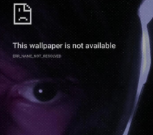

Home
Escola
Contato
Desenvolvedores
Desenvolvedores Do Projeto
Site Criado Pela Equipe Front-End (W.W.)
< Flavin >
Equipe Front-End
Catalão Goiás
Front-End Dev.
Html
Moon Cynose
Co-Desenvolvedor
CEPI Matilde Margon Vaz

< Murillo >
Equipe Front-End
Catalão Goiás
Front-End Dev.
Html e Css
Linux Na Veia!
White Hat Lammer
CEPI Matilde Margon Vaz
Prof.Augusto
Professor
Catalão Goiás
Professor
Química
Rei dos Nerds :)
CEPI Matilde Margon Vaz